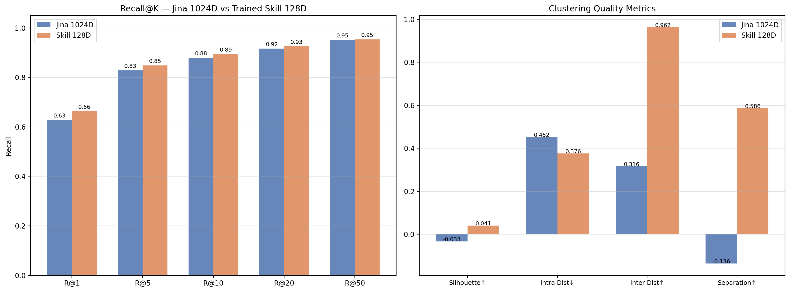
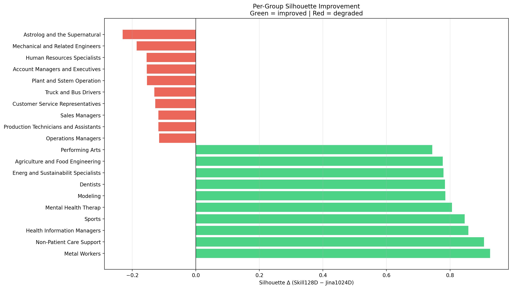

Predicting transition feasibility using high-fidelity similarity scores in a metric-optimized skill space.
The core objective is to predict a precise Skill-Fit Score for job transitions. By training an advanced neural model to maximize separation between occupational groups and calculating geometric similarity, I can mathematically determine if a job is transitionable or if the skill requirements are too diverse.
Stage 1 — AttnNet Warm-up (6 epochs): Only AttnNet is trained. It learns to aggregate K noisy job postings into a clean group centroid using MSE loss. CompressNet is frozen. This establishes stable attention weights before harder metric learning begins.
Stage 2 — Full End-to-End (up to 35 epochs, early stopping patience=10): Combined loss function with three terms:
L = 0.3 × L_triplet + 0.7 × L_SupCon + 0.01 × L_center
triplet Loss — Cosine triplet, margin = 0.8 (NormFace recommendation)
ReLU(sim_AN − sim_AP + 0.8)
Negatives sampled from top-20 nearest neighbor groups
SupCon Loss(NEW) — In-batch Supervised Contrastive (τ = 0.10)
All 2B batch members as negatives; solves the "179 groups ignored" problem
center Loss(NEW) — Pulls intra-class embeddings toward their learned 128D class center
λ = 0.01 prevents over-compression
Key design choices: Learnable scale parameter (init=10.0) prevents hypersphere collapse. CosineAnnealingLR per step. Validation accuracy measured against projected 128D centroids — not raw 1024D — to avoid the centroid gravity trap.
I compare three key structural representations of the skillset clusters in the original 1024D space vs. our custom 128D optimized Skill Space.
Visualizing 600,000 job points to see how well occupational groups are separated.
Analyzing the semantic proximity between different occupation groups.
Examining the nested tree structure of common skill requirements.
Note: Initially tried to make clusters using BERTopic before moving to using the provided Assigned Occupation Groups.
To evaluate the success of the 128D projection, I compared the original 1024D Jina embeddings against the optimized 128D Skill embeddings across retrieval and clustering metrics.

While global metrics provide a macro view, looking at individual groups shows where the metric learning had the most impact.

The 128D Skill Space improves every metric: retrieval, silhouette, and separation. The model crosses the critical threshold from negative to positive silhouette, meaning clusters are now internally coherent rather than just spread apart.
============================================================ FINAL SUMMARY ============================================================ Recall@1 | Jina: 0.6279 | Skill: 0.6631 | Δ = +0.0352 Recall@5 | Jina: 0.8279 | Skill: 0.8486 | Δ = +0.0207 Recall@10 | Jina: 0.8795 | Skill: 0.8944 | Δ = +0.0148 Recall@20 | Jina: 0.9168 | Skill: 0.9258 | Δ = +0.0090 Recall@50 | Jina: 0.9514 | Skill: 0.9538 | Δ = +0.0024 MRR | Jina: 0.7169 | Skill: 0.7453 | Δ = +0.0284 Silhouette | Jina: -0.0330 | Skill: 0.0405 | Δ = +0.0735 Intra Dist | Jina: 0.4520 | Skill: 0.3764 | Δ = -0.0756 Inter Dist | Jina: 0.3162 | Skill: 0.9624 | Δ = +0.6462 Separation | Jina: -0.1359 | Skill: 0.5860 | Δ = +0.7219 Per-group silhouette: 125 groups improved | 28 degraded Average delta across all groups: +0.2533
Retrieval: All Recall@K and MRR metrics improved. Recall@1 +0.0352, MRR +0.0284 — the model finds the right occupation group more often and ranks it higher.
Clustering: Silhouette crossed from −0.0330 to +0.0405 (the zero crossing is critical — clusters are now coherent). Intra-cluster distance tightened (−0.0756) while inter-cluster distance exploded +0.6462 and Separation +0.7219.
Per-group: 125 of 153 evaluated groups improved individually, with average silhouette delta of +0.2533 — not just global averaging, but occupation-level gains.
Explore the real occupation categories identified in your 600K dataset and view ground-truth job postings.
Select an occupation group to view raw competency text